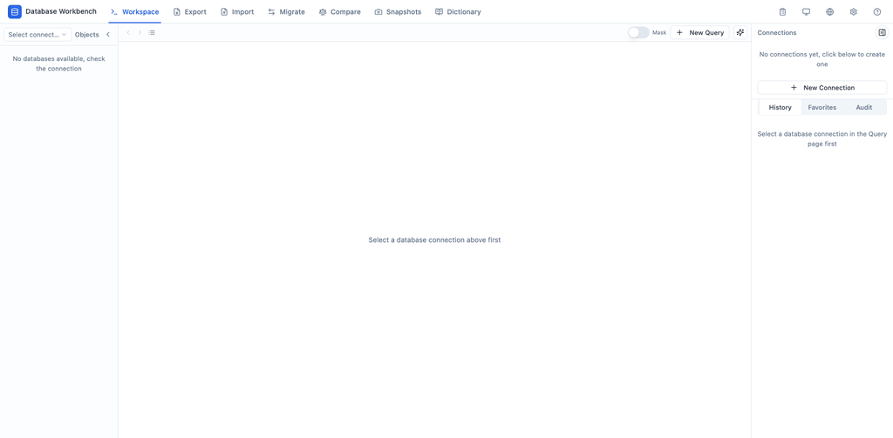

One tool. Every environment. Even the air-gapped ones.
dqex is a cross-platform database workbench that ships as a single static binary. Export, import, cross-dialect migration, schema comparison, snapshots, Excel data dictionaries, a full SQL terminal and an AI assistant — with a polished Web UI and a scriptable CLI, sharing one engine.
macOS (Intel / Apple Silicon), Linux (x64 / arm64), Windows (x64). Unzip it anywhere.
unzip dqex-*.zip && cd dqex && ./start.shWindows: start.bat · Install to PATH (optional): ./install.sh
http://127.0.0.1:8181Add a connection, then export, compare or query. Nothing leaves your machine.
Most database tools assume you have internet and root access.
In restricted networks, installing a Java-based client is a project in itself — shipping a JVM plus a pile of driver jars by hand, every time. dqex is what you get when you remove that assumption completely.
Zero dependency
One binary, no runtime. No JVM to ship, no Electron bundle, no CGO. The frontend is embedded. Copy it to a USB stick and run it on an air-gapped server.
Compliance is a feature, not a plugin
Excel data dictionaries with table comments, snapshot diff reports and exportable execution history are built in — the artifacts audits and 等保 reviews actually ask for.
AI that cannot surprise you
The agent reads your real schema before writing anything, generates dialect-correct SQL, and never executes a write without confirmation. No API key configured? The AI entry point does not even render.
It reads your schema first. It asks before it writes.
Optional, offline-safe, and completely inert until you configure it.

- Real schema, not guesses — the model queries actual table structures before generating, with live progress in the Web UI." data-zh="基于真实表结构，杜绝凭空想象 —— 生成前先查询真实表结构，Web 端实时显示进度。">Real schema, not guesses — the model queries actual table structures before generating.
- Generate ≠ Execute — AI only produces SQL text. Writes need confirmation, dangerous statements are blocked, and you can edit with \e before running." data-zh="生成 ≠ 执行 —— AI 只产出 SQL 文本。写操作需二次确认，危险语句被拦截，执行前可用 \e 编辑。">Generate ≠ Execute — AI only produces SQL text.
- Keys stay local — your API key is stored on your machine; the UI only ever shows a masked endpoint and model name." data-zh="密钥不出本机 —— API Key 存在本机，界面仅显示掩码后的端点与模型名。">Keys stay local — the UI only shows a masked endpoint.
- Offline fallback — a built-in SQL template library (
\template top_n orders amount 10) keeps working in fully isolated networks." data-zh="离线兜底 —— 内置 SQL 模板库（\template top_n orders amount 10）在完全隔离的网络里也能用。">Offline fallback — a built-in SQL template library still works. - No config, no footprint — the AI entry appears only when BaseURL, API Key and Model are all set." data-zh="未配置无入口 —— BaseURL / API Key / Model 三项齐全才启用，不影响任何既有功能。">No config, no footprint — the AI entry appears only when fully configured.
The day-to-day database work, in one place
Every capability exists in both the Web UI and the CLI, and both sides share the same connections, saved tasks and history.
Export
Schema and data to SQL, zip or gzip — with per-table conditions.
Import
SQL, zip or gzip into any database. Auto-creates tables and batches inserts.
Migrate
Database to database with automatic dialect conversion.
Compare
Schema and data diff between two databases.
Data dictionary
Tables and comments into a styled .xlsx.
Snapshot
Create, list, show, delete and compare.
SQL terminal
Web query editor plus an interactive CLI REPL.
AI assist
Generate, explain, optimize and fix, with diff preview.
Anything the UI does, the CLI does too
Save a connection once and reuse it everywhere. Every command can emit JSON, so dqex slots into scripts, cron jobs and agents.
# Save a connection once, reuse it everywhere dqex conn add --name prod --type mysql --host 10.20.16.170 --port 3317 --un root --pw '***' # Conditional export + gzip → take production data home safely dqex exp camunda -s prod -o backup.sql.gz --table-cond "orders:created_at >= '2026-01-01'" # Restore into your local test database dqex imp -t local_test -i backup.sql.gz --reset drop-and-create # Snapshot & compare — built for incident tracing dqex snapshot create -c prod -n baseline dqex snapshot compare -c prod --a baseline --b after-deploy # Compliance: one command → a styled Excel data dictionary dqex dict camunda -s prod -o data_dict.xlsx # Machine-readable output, for scripts and agents dqex sql -c prod --json "SELECT id, name FROM users LIMIT 10"
Where dqex wins, and where it does not
DBeaver is a bigger tool than dqex and it is free. dqex is not trying to win on breadth — it wins on the environments the others structurally cannot enter.
| dqex | DBeaver | Navicat | DataGrip | |
|---|---|---|---|---|
| Install form | Single static binary | JVM + driver jars | Installer, licensed | IDE, licensed |
| Air-gapped deploy | Copy and run | Manual JVM + jars | License constrained | License constrained |
| Time to first query | Under a minute | Several minutes | Install + activate | Install + activate |
| Cross-dialect migration | Built in, automatic | No | Yes | Partial |
| Excel data dictionary | One command | Plugin | Yes | No |
| Snapshot diff | Built in | No | No | No |
| AI-assisted SQL | Built in, offline fallback | No | Limited | Limited |
| Database breadth | MySQL, PostgreSQL, Oracle | Very wide | Wide | Wide |
| Price | Free, MIT | Free | Paid per seat | Paid |
The honest version: if you have unrestricted network access and need SQL Server, ClickHouse or twenty other engines, use DBeaver — it is excellent and it is free. dqex is for the machine where you cannot install anything, and for the compliance artifacts you have to hand over afterwards." data-zh="说实话：如果你网络不受限，又需要 SQL Server、ClickHouse 等二十多种引擎，就用 DBeaver —— 它很优秀，而且免费。dqex 是给那种「什么都装不了」的机器用的，以及给事后必须交出合规材料的人用的。">The honest version: if you have unrestricted network access and need many more engines, use DBeaver. dqex is for the machine where you cannot install anything.
Questions you probably have
Why not just use DBeaver?
Can the AI modify or delete my data on its own?
Do the AI features need internet access?
Does Oracle support require the Instant Client?
Which databases and platforms are supported?
Is it free for commercial use?
How do I take production data home safely?
--reset drop-and-create.